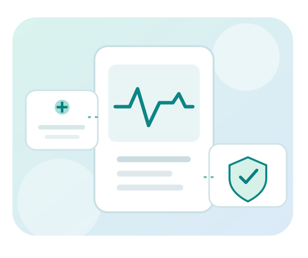

01
Explore
Try connected healthcare tools in the Smart Healthcare Security Lab and examine the data and risks behind them.
See the devices →Explore emerging healthcare technologies. Understand how they use data and AI. Learn to recognize the privacy, cybersecurity, and patient-safety risks that come with them.

A collaborative program bringing nursing education together with AI, digital health, and cybersecurity.
Try connected healthcare tools in the Smart Healthcare Security Lab and examine the data and risks behind them.
See the devices →Go deeper through the Nursing Cyber Fellows program, with guided modules, practical activities, and mentoring.
Explore the program →Connect what you learn to clinical workflows and healthcare environments through planned mentored externships.
See the pathway →Understand the clinical information a device collects and what its readings can—and cannot—tell you.
Follow the path from sensor to app, network, cloud service, or clinical system.
Think about unauthorized access, misleading results, data sharing, and safe clinical judgment.